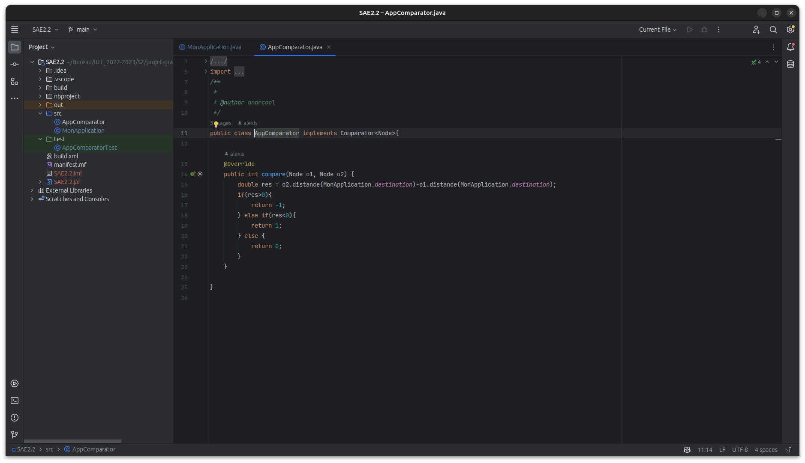
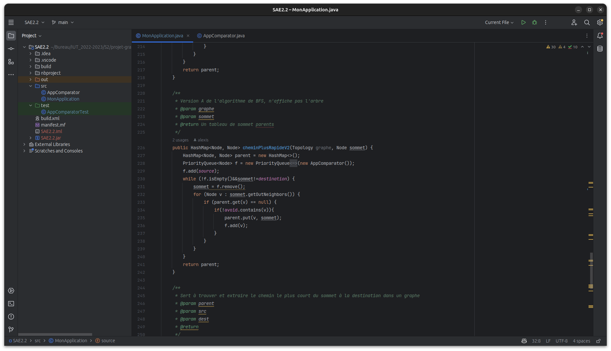

Bonjour, je m'appelle Alexis Clerc--Beaufort et je suis étudiant en informatique à l'IUT de bordeaux
Je vais vous présenter mon retour d'expérience sur le projet d'éditeur de graphes
Ce projet consistait en la création d’un logiciel de dessin de graphe avec java comme
langage. Le logiciel devait aussi trouver le chemin le plus court entre un point de départ et
un point d’arrivée, où tous les points. Le projet a pris 1 semaine à compléter et a permi de
vérifier nos acquis en théorie des graphes du S2

